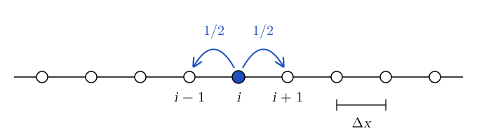
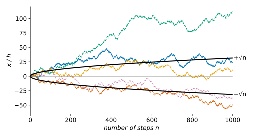
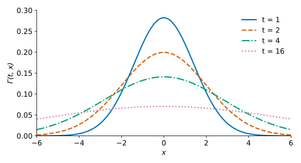

15 Diffusion and Viscous Flows
The diffusion equation is used to model many processes in astrophysics. Examples are:
- the diffusion of radiation in optically thick matter, which we have already met in Chapter 6;
- the diffusion of chemical substances, for example of the elements synthesized in supernovae into the interstellar medium;
- the diffusion of momentum, which is described by the shear viscosity.
In this chapter we first derive the diffusion equation from a simple model of a random walk. We then include bulk and shear viscosity in the momentum equation, we discuss how viscosity dissipates the kinetic energy of the flow, and we write the complete equations for a viscous fluid, the Navier–Stokes equations.
15.1 Random walks and diffusion
Consider a particle moving on a one-dimensional lattice with spacing \(\Delta x\), as in Figure 15.1. At each time step \(\Delta t\) the particle jumps to one of the two neighboring sites, to the left or to the right, with equal probability \(1/2\). For example, the particle could be a photon traveling at the speed of light \(c\) between two scatterings, in which case \(\Delta x = c \Delta t\).

Suppose that the particle starts at \(x = 0\). After \(n\) steps, its average position is still \(\langle x \rangle = 0\), because each step is equally likely to go to the left or to the right. However, the mean square displacement grows with the number of steps: \[ \langle x^2 \rangle = n \Delta x^2 . \tag{15.1}\] This is the same result that we used in Chapter 3 to estimate the number of scatterings needed by a photon to escape from a supernova (Equation 3.16). Figure 15.2 shows a few examples of random walks. The typical distance from the origin after a time \(t = n \Delta t\) is \(X = \sqrt{\langle x^2 \rangle} = \sqrt{n} \Delta x\), so the combination \[ \frac{X^2}{2 t} = \frac{\Delta x^2}{2 \Delta t} \tag{15.2}\] does not depend on \(n\). So we expect it to be a characteristic scale of the problem.

Let \(P(t, x)\) be the probability of finding the particle at the position \(x\) at time \(t\). The particle can be at \(x\) at time \(t + \Delta t\) only if it was at \(x - \Delta x\) or at \(x + \Delta x\) at time \(t\), so \[ P (t + \Delta t, x) = \frac{1}{2} \left[ P (t, x - \Delta x) + P (t, x + \Delta x) \right] . \tag{15.3}\] To take the continuum limit, we expand both sides in Taylor series: \[ \begin{aligned} P (t + \Delta t, x) &= P (t, x) + \Delta t \, \frac{\partial P}{\partial t} + O (\Delta t^2), \\ P (t, x \pm \Delta x) &= P (t, x) \pm \Delta x \, \frac{\partial P}{\partial x} + \frac{1}{2} \Delta x^2 \, \frac{\partial^2 P}{\partial x^2} + O (\Delta x^3) . \end{aligned} \tag{15.4}\] Inserting these expansions in Equation 15.3, the terms with \(P(t, x)\) and the first derivatives in \(x\) cancel, and we obtain \[ \frac{\partial P}{\partial t} = \left( \frac{\Delta x^2}{2 \Delta t} \right) \frac{\partial^2 P}{\partial x^2} . \tag{15.5}\] If we now take the limit \(\Delta x, \Delta t \to 0\) keeping \(\Delta x^2 / \Delta t\) fixed, we obtain the diffusion equation \[ \boxed{\frac{\partial P}{\partial t} = D \frac{\partial^2 P}{\partial x^2},} \tag{15.6}\] where \[ D = \frac{\Delta x^2}{2 \Delta t} \tag{15.7}\] is the diffusion coefficient. This is the same combination we found in Equation 15.2. In the continuum limit, \(P (t, x)\) becomes a probability distribution function (pdf), meaning that \(P (t, x) \mathrm{d} x\) is the probability of finding the particle between \(x\) and \(x + \mathrm{d} x\) at time \(t\).
The diffusion coefficient has units of \(\mathrm{m^2\,s^{-1}}\), as in Equation 6.30. For the photon, \(\Delta x\) is the mean free path \(\lambda\) and \(D = \lambda c / 2\). This agrees with Equation 6.28, apart from the factor \(1/2\) in place of \(1/3\). The exact factor depends on the number of dimensions and on the distribution of the distances traveled between two scatterings, which in our model are all equal to \(\Delta x\).
The solution of Equation 15.6 for a particle that starts at \(x = 0\), that is with \(P (0, x) = \delta (x)\), is called the fundamental solution: \[ \Gamma (t, x) = \frac{1}{\sqrt{4 \pi D t}} \mathrm{e}^{- \frac{x^2}{4 D t}} . \tag{15.8}\] This can be found from the central limit theorem, or using separation of variables. The fundamental solution is a Gaussian with variance \(\langle x^2 \rangle = 2 D t\), which is Equation 15.1 with \(n = t / \Delta t\). As shown in Figure 15.3, the peak decreases and the distribution spreads out with time, while the area under the curve, the total probability, stays equal to 1. The width of the distribution grows as \(\sqrt{D t}\), so the time needed to diffuse over a distance \(L\) is \(\sim L^2 / D\).

In three dimensions, and allowing \(D\) to depend on position, the diffusion equation reads \[ \frac{\partial P}{\partial t} = \nabla \cdot (D \nabla P) . \tag{15.9}\] Note that this has the form of a conservation law, \(\partial_t P + \nabla \cdot \mathbf{F} = 0\), with a flux given by Fick’s law, \(\mathbf{F} = - D \nabla P\) (Equation 6.29). If, instead of a single particle, we consider many particles, then \(P\) is replaced by their density. We will study the solutions of the diffusion equation, also in the presence of a flow, in the in-class worksheet (Section 15.5).
15.2 Viscous flows
In Chapter 6 we wrote the momentum equation in terms of the stress tensor \(\mathbf{T}\). In the absence of external forces, it reads \[ \rho \frac{\mathrm{d} \mathbf{v}}{\mathrm{d} t} = \nabla \cdot \mathbf{T} . \tag{15.10}\] So far we have only considered ideal fluids, for which \(\mathbf{T} = - p \mathbf{I}\). We now write \[ \mathbf{T} = - p \mathbf{I} + \boldsymbol{\tau}, \tag{15.11}\] where \(\boldsymbol{\tau}\) is the viscous stress tensor. Viscous stresses arise when neighboring fluid elements move with different velocities, so \(\boldsymbol{\tau}\) must depend on the derivatives of the velocity, and it must vanish for a uniform flow. The simplest choice is to take \(\boldsymbol{\tau}\) to be linear in \(\nabla \mathbf{v}\). It is convenient to introduce the rate-of-strain (or shear) tensor \[ \mathbf{S} = \frac{1}{2} \left( \nabla \mathbf{v} + \nabla \mathbf{v}^T \right) . \tag{15.12}\] Note that \(\mathbf{S}\) is symmetric and that it vanishes for a rigid rotation, as it should, because a rigidly rotating fluid has no internal friction. If the fluid is isotropic, the only symmetric tensors that we can build from \(\nabla \mathbf{v}\) to first order are \(\mathbf{S}\) and \((\nabla \cdot \mathbf{v}) \mathbf{I}\). So the most general viscous stress tensor can be written as \[ \boxed{ \begin{aligned} \boldsymbol{\tau} &= \zeta (\nabla \cdot \mathbf{v}) \mathbf{I} \\ &\quad + \rho \nu \left[ \left( \nabla \mathbf{v} + \nabla \mathbf{v}^T \right) - \frac{2}{3} (\nabla \cdot \mathbf{v}) \mathbf{I} \right], \end{aligned}} \tag{15.13}\] where \(\nu\) is the kinematic shear viscosity, \(\rho \nu\) the dynamic shear viscosity, and \(\zeta\) the bulk viscosity. This is the form used in Clarke and Carswell (2007). Note that \(\nu\) has units of \(\mathrm{m^2\,s^{-1}}\), like a diffusion coefficient, while \(\rho \nu\) and \(\zeta\) have units of \(\mathrm{kg\,m^{-1}\,s^{-1}} = \mathrm{Pa\,s}\). The term in square brackets has zero trace, so the shear viscosity describes the response of the fluid to a deformation that does not change its volume, while the bulk viscosity describes the response to a compression or expansion. Some books write the coefficient of \((\nabla \cdot \mathbf{v}) \mathbf{I}\), that is \(\zeta - \frac{2}{3} \rho \nu\), as a single coefficient, called the second coefficient of viscosity.
To compute the divergence of \(\boldsymbol{\tau}\), we first compute the divergence of \(\mathbf{S}\). Writing \(\mathbf{S}\) row by row, we have \[ \mathbf{S} = \frac{1}{2} \begin{pmatrix} \partial_x \mathbf{v}^T + \nabla v_x^T \\ \partial_y \mathbf{v}^T + \nabla v_y^T \\ \partial_z \mathbf{v}^T + \nabla v_z^T \end{pmatrix}, \tag{15.14}\] so that \[ \begin{aligned} \nabla \cdot \mathbf{S} &= \frac{1}{2} \partial_x \left[ \partial_x \mathbf{v} + \nabla v_x \right] + \frac{1}{2} \partial_y \left[ \partial_y \mathbf{v} + \nabla v_y \right] + \ldots \\ &= \frac{1}{2} \left[ \nabla^2 \mathbf{v} + \nabla (\nabla \cdot \mathbf{v}) \right] . \end{aligned} \tag{15.15}\] Assuming that \(\rho \nu\) and \(\zeta\) are constant, we then find \[ \nabla \cdot \mathbf{T} = - \nabla \left[ p - \left( \zeta + \frac{1}{3} \rho \nu \right) (\nabla \cdot \mathbf{v}) \right] + \rho \nu \nabla^2 \mathbf{v} . \tag{15.16}\] The term \(- (\zeta + \frac{1}{3} \rho \nu) (\nabla \cdot \mathbf{v})\) acts like an additional pressure, the bulk viscous pressure. It is positive in a compression, \(\nabla \cdot \mathbf{v} < 0\), and it opposes the compression. The last term in Equation 15.16 is the shear viscosity term. Accordingly, the momentum equation becomes This is the Navier–Stokes equation. For an incompressible flow, \(\nabla \cdot \mathbf{v} = 0\), it reduces to which is the form we will use in Chapter 17 (Equation 17.1). Note that, if we neglect the advection and the pressure terms, Equation 15.18 becomes \(\partial_t \mathbf{v} = \nu \nabla^2 \mathbf{v}\), which is a diffusion equation for each component of the velocity, with \(D = \nu\). In other words, the shear viscosity describes the diffusion of momentum.
15.3 Kinetic energy dissipation
To see how viscosity affects the energy of the flow, we multiply Equation 15.17 by \(\mathbf{v}\). Following the same steps as in Chapter 6 (Equation 6.21), we obtain \[ \begin{aligned} &\frac{\partial \left( \frac{1}{2} \rho v^2 \right)}{\partial t} + \nabla \cdot \left[ \left( \frac{1}{2} \rho v^2 + p \right) \mathbf{v} \right] \\ &\qquad = p \nabla \cdot \mathbf{v} + (\nabla \cdot \boldsymbol{\tau}) \cdot \mathbf{v} . \end{aligned} \tag{15.25}\] The last term is new and describes the viscous dissipation of kinetic energy.
Consider first the incompressible case. Integrating over a volume \(V\), we find \[ \begin{aligned} \int_V (\nabla \cdot \boldsymbol{\tau}) \cdot \mathbf{v} \mathrm{d} V &= \int_V \rho \nu \nabla^2 \mathbf{v} \cdot \mathbf{v} \mathrm{d} V \\ &= \int_V \rho \nu \nabla \cdot \left[ (\nabla \mathbf{v}) \cdot \mathbf{v} \right] \mathrm{d} V - \rho \nu \int_V | \nabla \mathbf{v} |^2 \mathrm{d} V . \end{aligned} \tag{15.26}\] The first term on the RHS can be written as a surface integral using the divergence theorem, and it vanishes if, for example, the fluid is at rest on the boundary of \(V\). So the shear viscosity always decreases the kinetic energy of the flow, and it does so at a rate proportional to \(\int_V | \nabla \mathbf{v} |^2 \mathrm{d} V\). For an incompressible flow, and if the boundary terms vanish, this integral is equal to \(\int_V | \boldsymbol{\omega} |^2 \mathrm{d} V\), where \(\boldsymbol{\omega} = \nabla \times \mathbf{v}\) is the vorticity (Equation 13.2). This is the enstrophy of the flow. We will use this result in Chapter 17 (Equation 17.11).
If instead the flow is compressible and \(\nu = 0\), we find \[ \begin{aligned} \int_V (\nabla \cdot \boldsymbol{\tau}) \cdot \mathbf{v} \mathrm{d} V &= \zeta \int_V \nabla (\nabla \cdot \mathbf{v}) \cdot \mathbf{v} \mathrm{d} V \\ &= \zeta \int_V \nabla \cdot \left[ (\nabla \cdot \mathbf{v}) \mathbf{v} \right] \mathrm{d} V - \zeta \int_V (\nabla \cdot \mathbf{v})^2 \mathrm{d} V . \end{aligned} \tag{15.27}\] Once again, the first term on the RHS is a surface term that vanishes for suitable boundary conditions. So the bulk viscosity dissipates kinetic energy whenever the fluid is compressed or expanded. As we will see next, the kinetic energy lost to viscous dissipation is not destroyed, but it is converted into internal energy.
15.5 In-class worksheet
Core-collapse supernovae inject metals, such as oxygen, into the interstellar medium (ISM). After the supernova remnant has stalled its expansion, the diffusion of these elements throughout the galaxy can be modeled through an advection-diffusion equation: \[ \frac{\partial \rho}{\partial t} + \nabla \cdot (\rho \mathbf{v}) = \nabla \cdot (D \nabla \rho), \tag{15.34}\] where \(\rho\) is the mass density of the newly synthesized elements, \(\mathbf{v}\) is the local velocity of the ISM, and \(D\) is a diffusion coefficient.
Show that, under suitable assumptions, \[ \frac{\mathrm{d}}{\mathrm{d} t} \int_V \rho \mathrm{d}^3 \mathbf{r}= 0. \tag{15.35}\]
Assume that \(\mathbf{v}= \mathrm{const}\), \(D = \mathrm{const} > 0\), and look for solutions in the form \[ \rho (t, \mathbf{x}) = \rho_0 \mathrm{e}^{\mathrm{i} (\mathbf{k} \cdot \mathbf{x}- \omega t)} . \tag{15.36}\] Sketch the solution for different times and give a physical interpretation of the results.
How do the results change if \(D < 0\)?
Show that Equation 15.34 can be written as \[ \frac{\partial \rho}{\partial t} + \nabla \cdot \left[ \rho \left( \mathbf{v}- D \frac{\nabla \rho}{\rho} \right) \right] = 0. \tag{15.37}\] Interpret the term in round brackets as an effective propagation velocity \(\mathbf{v}_{\mathrm{eff}}\). How does \(\mathbf{v}_{\mathrm{eff}}\) depend on the wave number \(\mathbf{k}\) if \(\rho\) is as in Equation 15.36?
15.6 Exercises
Exercise 15.1 (Steady viscous vortex) Consider a steady-state, axisymmetric solution of the incompressible, viscous, Navier–Stokes equations in cylindrical coordinates \((R, \phi, z)\) in the form \[ v_R = - \alpha R, \qquad v_{\phi} = \frac{\mathcal{C}}{2 \pi R} g (R), \qquad v_z = 2 \alpha z, \tag{15.38}\] where \(\alpha > 0\) and \(\mathcal{C} > 0\) are given constants, while \(g (R)\) is a function satisfying \[ \lim_{R \rightarrow 0} g (R) = 0, \qquad \lim_{R \rightarrow \infty} g (R) = 1. \tag{15.39}\] Let \(\nu > 0\) be the kinematic viscosity.
Show that the flow is incompressible.
Derive an equation for \(g (R)\) assuming the flow to be steady state.
Compute the vorticity \(\boldsymbol{\omega}\) of the flow.
Exercise 15.2 (Sound waves and bulk viscosity) Consider a fluid with bulk viscosity \(\zeta\), but no shear viscosity (\(\nu = 0\)). In one dimension, the continuity and momentum equations are \[ \partial_t \rho + \partial_x (\rho v) = 0, \qquad \rho (\partial_t v + v \partial_x v) = - \partial_x p + \zeta \partial_x^2 v . \tag{15.40}\] The background is homogeneous, with \(\rho = \rho_0\), \(v = 0\), and \(p = p_0\). Consider small adiabatic perturbations of the form \(\mathrm{e}^{\mathrm{i} (k x - \omega t)}\).
Derive the dispersion relation \(\omega (k)\). How is it modified compared with the case \(\zeta = 0\) (Chapter 9)?
Show that, if \(\zeta\) is small, sound waves are damped, and find the damping rate. Which waves are damped faster, short or long ones?
What happens to perturbations with \(k > 2 \rho_0 c_s / \zeta\)?
15.7 Further reading
- Clarke and Carswell (2007), Chapter 11 (viscous flows).